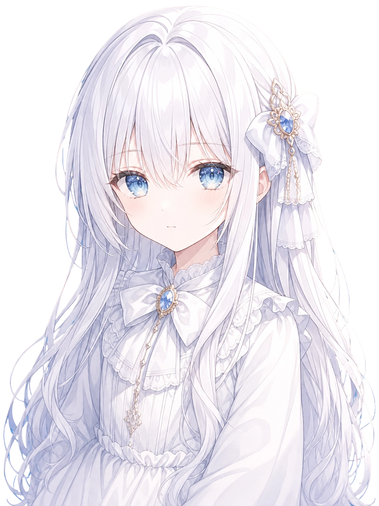

方案 C · 宽屏侧翼棱镜交谈手札卡
日常轻交互浮于非遮挡侧翼 · 底栏零增高 · 立绘原位零跳动
立绘 Δy
0.0px
底栏 56px Δh
0.0px
侧翼
右翼展开
左侧·贝阿特丽丝
→右翼
右侧·爱丽丝
→左翼
收起手札
参考标尺
希尔维亚
10岁
三阶
480
帝国历 432年 · 春
晴朗晨光
生命
160/160
魔力
226/240
体力
8/10
演武
四维
面板
音量
标题
惬意
78
日程
小铺
信匣
1
花园
公爵府
修剪整齐的蔷薇花圃与喷泉
贝阿特丽丝
交谈中

爱丽丝
点击轻谈
PORTRAIT TOP
EYE LINE · SAFE CLEARANCE
PORTRAIT BASE · Δy = 0.0px LOCKED
地图
交谈
体1
修行
体3
学习
体2
课程
体2+
休息
恢复
物品
奇遇
下个季度